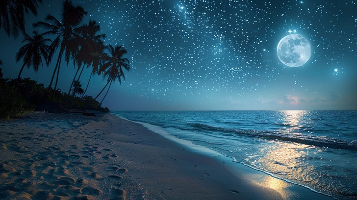

Cielo
La imagen muestra una hermosa playa nocturna iluminada por miles de estrellas que brillan intensamente en el cielo. Las palmeras se alzan a un costado, mientras las olas del mar acarician suavemente la arena. El paisaje transmite tranquilidad, libertad y serenidad. Representa un lugar perfecto para descansar, reflexionar y disfrutar de la belleza de la naturaleza.